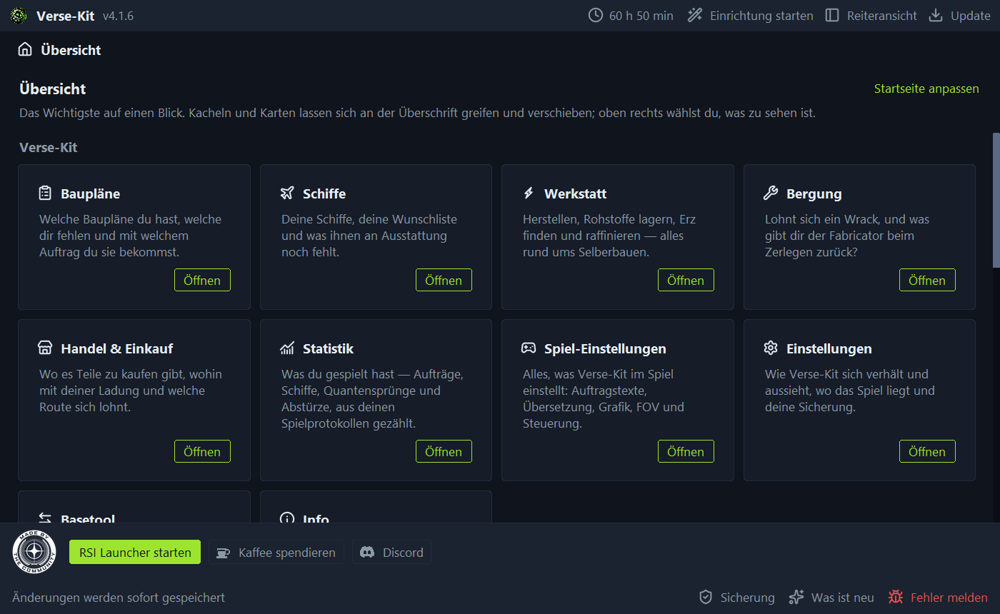
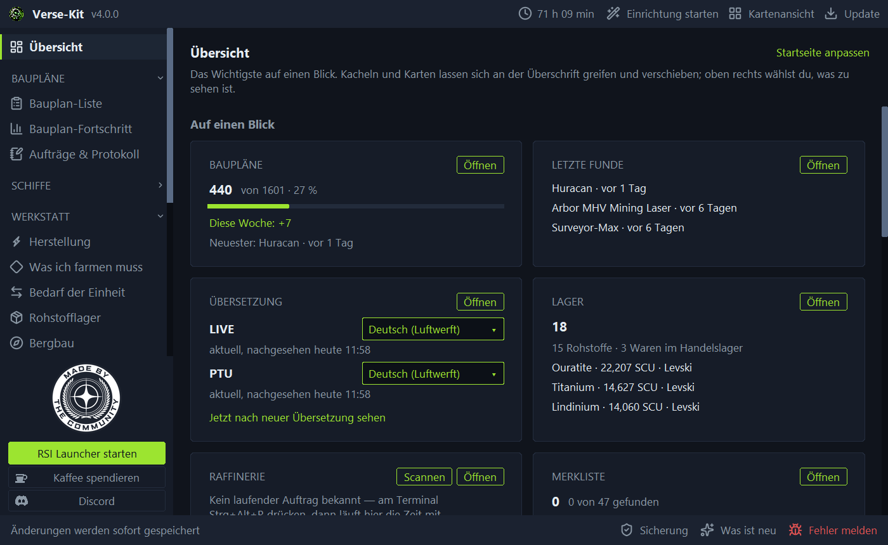

Dein Werkzeugkasten für Star Citizen — Baupläne, Aufträge, Herstellung, Handel und Hangar, live beim Spielen.
ehemals SC BP Watcher · Windows und Linux · ohne Konto, ohne Cloud
Kostenlos und quelloffen unter GPL-3.0. Herunterladen, starten, fertig.
Downloads
Verse-Kit startet in der Kartenansicht: jeder Bereich als Karte mit kurzer Erklärung, die Seiten, die du ständig brauchst, an der Startseite angeheftet. Wer lieber alles in einer Leiste links hat, schaltet oben rechts auf die Reiteransicht um — die Seiten sind dieselben.


Links steht die Seitenleiste wie im Programm — dieselben Gruppen, dieselbe Reihenfolge. Die Bilder zeigen das Werkzeug mit Beispieldaten.

Hinweis: Das hier sind Bildschirmfotos, kein laufendes Programm — ein Klick ins Bild tut nichts. Das echte Werkzeug läuft auf deinem Rechner, nicht im Browser.
Schaltest du einen Bauplan frei, steht er sofort in der Liste. Verse-Kit liest die Protokolle des Spiels mit — ohne ins Spiel einzugreifen.
Im Spiel steht an jedem Auftrag, welche Baupläne er ausschüttet und welche davon dir noch fehlen. Ohne herauszutabben.
Zutaten, Zeiten und Preise zu jedem Gegenstand, dazu Fundorte, Konzentration und der Raffinerie-Vergleich je Erz.
Welche Schiffe dir gehören, was hineinpasst und was noch fehlt — mit Summe und Einkaufsroute.
Läden, Verkaufsorte und Routen, die sagen, was am Ende übrig bleibt — nicht nur, was etwas kostet.
Spielzeit, Schiffe, Aufträge, Quantensprünge und Abstürze — aus deinen Spielprotokollen gezählt, und sie bleiben, auch wenn das Spiel die Protokolle löscht.
Sechs Farbschemata und stufenlose Größe. Dazu siehst du, welcher Stick welche Nummer hat, und stellst Totzone und Kurven ein.
Kein Konto, keine Cloud, keine persönlichen Daten. Verse-Kit holt nur Nachschlagedaten von Adressen, die dafür freigegeben sind — und zählt einmal am Tag mit, ohne Kennung und abschaltbar.
Verse-Kit ergänzt die Texte des Spiels um das, was dort fehlt. Klasse, Größe und Gütegrad stehen direkt am Namen eines Bauteils. An jedem Auftrag steht, welche Baupläne er bringt, und unter der Beschreibung eines Gegenstands, ob du den Bauplan schon hast. Jeder Teil lässt sich abschalten, und „Wieder entfernen“ stellt die Originaltexte zeichengenau her.

Unter Windows ein Installer, unter Linux eine einzelne Datei. Neue Versionen meldet das Programm selbst und spielt sie auf Knopfdruck ein.
Die Knöpfe laden immer die neueste Fassung. Alle Fassungen ansehen
Zu jeder Fassung gehört eine Prüfsumme. Der Wert, den dein System ausgibt, muss in SHA256SUMS.txt stehen. Sonst die Datei nicht starten.
certutil -hashfile VerseKit-Setup.exe SHA256
sha256sum VerseKit-x86_64.AppImage
Virenprüfung: VirusTotal-Bericht der aktuellen Version
Beim ersten Start meldet Windows „Der Computer wurde durch Windows geschützt“ — das passiert bei jedem Programm ohne teures Zertifikat. Auf „Weitere Informationen“ klicken, dann auf „Trotzdem ausführen“. Die Anleitung im Verzeichnis erklärt es mit Bildern.
Die berechtigte Frage vor jedem Download. Hier steht, was Verse-Kit tut — und was nicht.
Kein Zugriff auf den Speicher des Spiels, nichts wird eingeschleust. Verse-Kit liest die Protokolle, die Star Citizen selbst schreibt, und ändert nur Dateien, die du auch von Hand bearbeiten könntest. Einzige Ausnahme ist der Anti-AFK (nur Windows, standardmäßig aus): Eingeschaltet drückt er alle 5 Minuten Alt+X, wie du es selbst tun würdest.
Jede Zeile liegt offen auf GitHub. Die Dateien zum Herunterladen baut GitHub selbst aus genau diesem Code.
Zu jeder Version gehört eine Prüfsumme. Ein Update wird nur eingespielt, wenn die Datei genau dazu passt.
Keine Bezahlstufe, keine Werbung, keine Anmeldung. Ein Fehlerbericht geht nur raus, wenn du ihn selbst abschickst.
Jede Version lässt der Bau bei VirusTotal prüfen; den Bericht verlinkt „Herunterladen“. Einzelne Scanner melden bei gepackten Python-Programmen gelegentlich einen Treffer aus maschineller Heuristik — ein bekannter Fehlalarm.
Verse-Kit ist ein inoffizielles Fanprojekt und steht in keiner Verbindung zu Cloud Imperium Games.
Den Watcher von scmdb musst du dafür nicht herunterladen. Es geht mit LIVE und HOTFIX.
Ja. Verse-Kit ist (noch) nicht digital signiert, deshalb zeigt Windows „Der Computer wurde durch Windows geschützt“. Auf „Weitere Informationen“ und dann „Trotzdem ausführen“ klicken. Der Code liegt offen auf GitHub, und GitHub baut die Dateien selbst daraus.
Strg+Alt+B holt die Bauplan-Liste nach vorn. Unter Windows liest Strg+Alt+R das Raffinerie-Terminal und öffnet danach das Lager mit den gelesenen Zeilen. Beide lassen sich unter Einstellungen → Overlay ändern.
Den Ordner siehst und änderst du unter Einstellungen → Installation & Pfade („Ordner für deine Daten“). Eine Sicherung zum Mitnehmen gibt es unter Einstellungen → Sichern & Zurücksetzen.
Unter Einstellungen → Basetool die gewünschten Bereiche einschalten (Baupläne, Lager, Hangar, Bedarf der Einheit) und auf „Verbinden“ klicken. Die Anmeldung läuft im Browser über dein Basetool-Konto. Der Reiter „Bedarf der Einheit“ erscheint erst mit dieser Verbindung.
Ein Fehlalarm: Programme, die wie Verse-Kit zu einer einzigen Datei gepackt sind, werden oft fälschlich erkannt. Ob deine Datei echt ist, zeigt die Prüfsumme: An jeder Fassung auf GitHub hängt SHA256SUMS.txt, und der Wert dort muss zu deiner Datei passen (unter Windows: certutil -hashfile VerseKit-Setup.exe SHA256). Passt er, die Datei im Virenscanner freigeben.
Lade die neueste Fassung oben unter „Herunterladen“ und installiere sie über die alte — deine Daten bleiben erhalten. Bleibt die Version trotzdem alt, startest du vermutlich eine alte einzelne .exe statt der Installation: Starte Verse-Kit über das Startmenü.
Der Knopf findet von allein nur das Startskript des LUG Helper. Wer über Lutris, Heroic oder Flatpak spielt, trägt unter Einstellungen → Installation & Pfade → „Startbefehl für Star Citizen“ seinen eigenen Befehl ein.
Jeder Spiel-Patch und jedes Update der Übersetzung schreibt die Textdatei des Spiels neu, dabei fallen die Angaben heraus. Nach einem Patch setzt Verse-Kit sie von selbst wieder ein; von Hand geht es unter Spiel-Einstellungen → Spiel → „Neu einsetzen“. Danach Star Citizen ganz beenden und neu starten — das Spiel liest die Datei nur beim Start. Läuft daneben ein zweites Übersetzungswerkzeug, überschreiben sich beide gegenseitig: Nimm nur eins.
Sieh auf das Auge in der Overlay-Leiste: grau heißt aus — anklicken; gelb heißt an, liest aber nicht — Verse-Kit einmal neu starten; grün heißt, es liest. Wird eine Zahl nicht erkannt, lern sie unter Abbau & Bergung → Bergbau → „Ziffern anlernen“ an. Den Scanner gibt es nur unter Windows.
Verse-Kit zählt, was seit der Einrichtung in den Logs von Star Citizen stand — ältere Logs löscht das Spiel selbst. Gleich einmal mit dem Fabricator im Spiel ab und hak Fehlendes in der Bauplan-Liste an. Liegt dein Stand schon im Basetool, bei scmdb oder als Datei vor, holst du ihn unter Einstellungen → Sichern & Zurücksetzen → „Bestand einlesen“.
Meist liegt der Ordner für deine Daten in OneDrive oder an einer Stelle, an der Verse-Kit nicht schreiben darf. Unter Einstellungen → Installation & Pfade → „Ordner für deine Daten“ einen Ordner außerhalb von OneDrive wählen, etwa auf D:.
Unter Einstellungen → Darstellung „Scharfe Darstellung“ einschalten und Verse-Kit neu starten.
Hilft nichts davon, klick in Verse-Kit unten rechts auf „Fehler melden“. Der Bericht geht direkt an den Entwickler, persönliche Ordnernamen werden vorher entfernt.
Startet Verse-Kit gar nicht, frag im Discord und schick die Fehlermeldung als Bild mit — dazu Windows oder Linux und welche Version du geladen hast.
Die neueste Version — alle früheren stehen unter „Alle Änderungen ansehen“.
Jede Version seit der ersten, mit allem, was neu, besser oder behoben ist — dieselben Texte, die das Programm unter „Was ist neu“ zeigt.